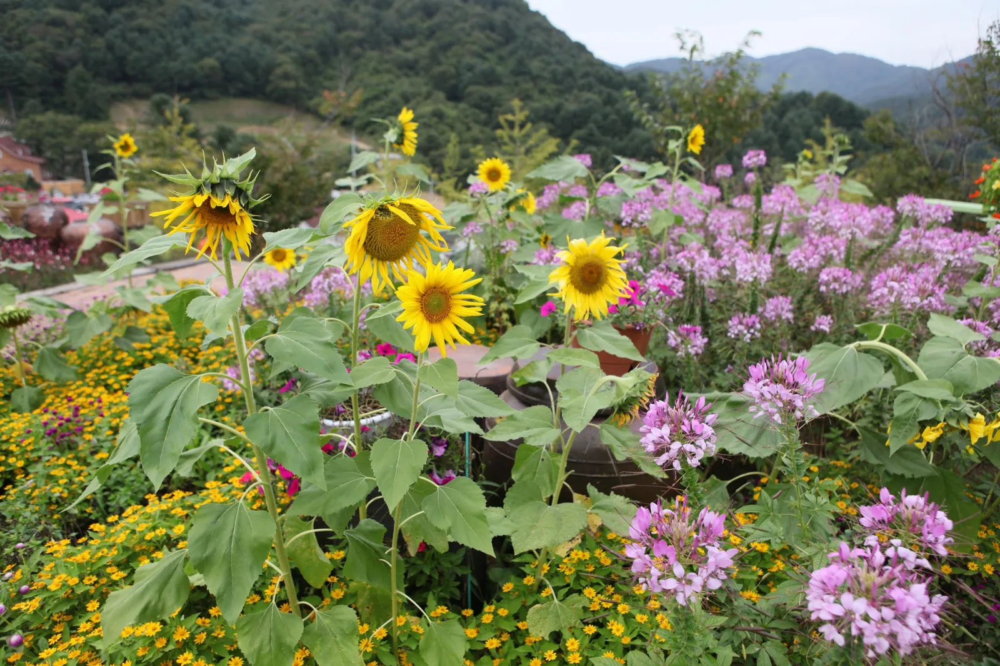
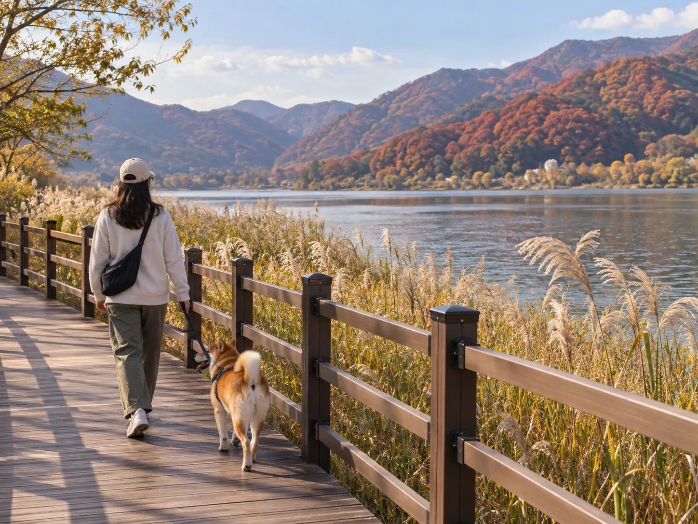
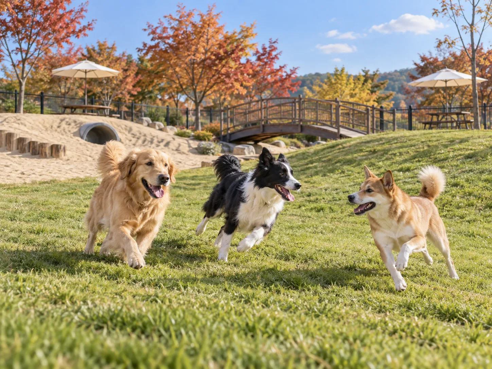

▲ 목적지를 정했다면, 이제 필요한 건 창문 한 뼘과 리드줄뿐이다 ⓒ CarPrism (AI 생성 이미지)
반려동물과 안고 운전하면 범칙금이라는 건 이제 많이 알려졌다. 카시트도 챙기고 이동장도 준비했다. 그런데 정작 어디로 갈지는 여전히 막막하다.
"반려동물 동반 가능"이라고 적힌 곳은 많지만, 막상 가보면 실내는 안 되고 야외만 된다거나 체중 제한이 있다거나 목줄 없이는 못 들어간다는 식의 조건이 붙는다. 이 기사는 서울에서 차로 1시간 안팎, 실제 동반 조건을 확인한 가을 드라이브 코스 4곳을 정리했다.
1. "실내는 안 되지만, 정원 전체가 산책로다" — 포천 허브아일랜드
포천 허브아일랜드는 43만㎡ 규모의 허브 테마파크다. 유럽풍 건물과 계절별 화단 사이로 난 산책로가 길게 이어져 있어, 반려동물과 함께 걷기에 적합한 야외 공간이 넓다는 점이 장점으로 꼽힌다.

▲ 포천 허브아일랜드의 야외 화단 — 반려동물 동반이 가능한 곳은 이런 야외 산책 구역이다 ⓒ Jinho Jung, Wikimedia Commons (CC BY-SA 2.0)
📍 동반 조건
· 야외 전 구역 동반 가능 — 단 법정 맹견 견종은 입장 제한
· 목줄 필수, 중형견(10~25kg)·대형견(25kg 이상)은 입마개 착용 필수(무단 해제 시 강제 퇴장)
· 동물등록증·광견병 예방접종 증명 지참 권장
· 실내 매장은 대부분 동반 불가 — 카페·식당별로 다를 수 있어 현장 확인 필요
· 반려동물 별도 입장료 없음 (사람 입장료만 부과)
· 배변봉투는 직접 지참
방문 전 운영시간과 반려동물 동반 관련 최신 안내는 공식 홈페이지에서 확인할 수 있다. 허브아일랜드 홈페이지 바로가기
2. "카페마다 규칙이 다르다" — 파주 헤이리 예술마을 카페거리
헤이리 예술마을은 갤러리와 카페, 식당이 뒤섞인 예술인 마을이다. 반려동물 동반이 가능한 업소가 특히 많은 편으로 꼽히는데, 다만 동반 가능 여부와 조건은 업소마다 제각각이라는 점을 먼저 알아둘 필요가 있다.
▲ 헤이리 예술마을의 갤러리·카페 거리 — 야외 테라스 좌석을 갖춘 업소가 많아 반려동물 동반에 비교적 관대한 편이다 ⓒ Jeon Han, Korea.net (CC BY-SA 2.0)
📍 대표 사례 — 카페 헥(Hek)
파주시 탄현면 헤이리마을길 82-154에 위치한 반려동물 동반 카페로, 영업시간은 화~목요일 11:00~20:00, 금~일요일 11:00~22:00(월요일 휴무)다. 1회에 한해 매너 벨트를 제공하고 물그릇·배변봉투 등 기본 물품을 구비하고 있다. 2층에는 반려동물 용품 편집샵도 있다. 마을 전체적으로는 목줄 착용이 필수이며, 맹견의 경우 입마개 착용이 요구된다.
✅ 헤이리 방문 전 확인할 것
· 목적지로 정한 카페·식당이 실내까지 동반 가능한지, 야외 테라스만 가능한지
· 대형견의 경우 체중 제한이나 입마개 규정이 있는지
· 2026년 3월부터 시행된 '반려동물 동반출입 음식점' 등록 제도에 따라 실내까지 합법적으로 동반 가능한 업소가 늘고 있다 — 출입구의 등록 표시판으로 확인할 것(개별 업소의 등록 여부는 방문 전 문의 권장)
· 마을이 넓어 동반 가능 업소 지도를 미리 검색해두는 편이 시간을 아낄 수 있음
3. "돈 한 푼 안 들이고, 강변을 걷는다" — 남양주 물의정원
물의정원은 한강 살리기 사업으로 2012년 조성된 무료 개방형 수변공원이다. 북한강을 따라 강변산책길·물향기길·물빛길·물마음길 네 갈래 산책로가 이어지고, 상징인 뱃나들이교 너머로는 습지와 초화단지가 펼쳐진다.

▲ 물의정원의 수변 데크길은 평탄해 반려동물과 천천히 걷기 좋다 ⓒ CarPrism (AI 생성 이미지)
📍 동반 조건과 접근성
· 무료 개방 공원 — 별도 입장료나 예약 없음
· 반려동물 동반 시 자전거도로와 보행 공간을 구분해 이용해야 함
· 평탄한 수변길과 그늘, 쉼터가 이어져 있어 천천히 걷기에 적합
· 경의중앙선 운길산역 1번 출구에서 도보 약 10분 — 차량 이용 시 인근 주차장 이용
산책로 구성과 계절별 볼거리는 남양주시 문화관광 홈페이지에서 자세히 확인할 수 있다. 남양주 물의정원 안내 바로가기
4. "목줄을 풀 수 있는 몇 안 되는 곳" — 안성맞춤랜드 같이파크
대부분의 동반 가능 장소는 '목줄을 맨 채로'가 전제다. 안성맞춤랜드 안에 있는 반려견 전용 놀이터 '같이파크'는 다르다. 입장 후에는 목줄을 풀고 자유롭게 뛰놀 수 있는 국내 몇 안 되는 공간 중 하나다.

▲ 같이파크는 중소형견과 대형견 구역이 나뉘어 있어 견종 간 충돌 위험이 적다 ⓒ CarPrism (AI 생성 이미지)
📍 시설과 이용 규칙
· 2025년 6월 23일 정식 개장(2024년 11월부터 약 2억 2818만 원 투입해 조성), 약 4320㎡(1307평) 규모
· 중소형견 구역과 대형견 구역이 분리돼 있어 안전성을 높임
· 모래 언덕, 나무다리, 급수대, 피크닉 테이블과 파라솔 등 부대시설 구비
· 입장·퇴장 시에는 목줄 또는 가슴줄 착용 필수, 입장 후에는 해제 가능
· 보호자는 배변봉투 지참 필수, 반려견을 풀어주기 전 출입구가 모두 닫혀 있는지 확인해야 함
· 무료 이용
✅ 놀이터 이용 시 매너
· 다른 반려견과의 합사 반응을 미리 살피고, 공격성이 있다면 별도 시간대 이용 고려
· 백신 접종과 건강 상태를 사전에 확인
· 물놀이나 흙놀이 후 이동을 대비해 여분 수건이나 매트를 차에 챙겨둘 것
5. 출발 전 비교표와 체크리스트
네 곳 모두 서울에서 차로 1시간 안팎이지만, 성격은 전혀 다르다. 목적에 따라 골라 가는 편이 낫다.
| 장소 | 성격 | 동반 조건 | 비용 |
|---|---|---|---|
| 포천 허브아일랜드 | 테마 정원 산책 | 야외 전 구역(맹견 제외), 실내 대부분 불가 | 사람 입장료만 |
| 파주 헤이리 | 카페거리 투어 | 업소별 상이, 목줄 필수 | 업소 이용 요금 |
| 남양주 물의정원 | 수변 산책 | 목줄 필수, 자전거도로 구분 | 무료 |
| 안성맞춤랜드 같이파크 | 목줄 없이 뛰기 | 입퇴장 시만 목줄, 견종별 구역 분리 | 무료 |
✅ 출발 전 최종 체크리스트
· 목줄·가슴줄·이동장 — 뒷좌석 고정용 안전벨트도 함께
· 배변봉투·물통·물그릇 — 대부분의 공공장소는 방문객이 직접 지참해야 함
· 동물등록증·예방접종 증명 — 일부 시설은 확인을 요구할 수 있음
· 방문 전 전화 확인 — 동반 조건은 시설 사정에 따라 수시로 바뀜
· 여분 수건·매트 — 흙길·모래밭 이용 후 차량 오염 방지용
6. 요약
반려동물과 갈 수 있는 곳은 이미 많이 늘었다. 문제는 "동반 가능"이라는 표시 하나만 보고 출발했다가 현장에서 조건에 막히는 경우다. 포천 허브아일랜드는 야외 전용, 파주 헤이리는 업소별 상이, 남양주 물의정원은 무료 개방형, 안성맞춤랜드 같이파크는 목줄을 풀 수 있는 공간이라는 점에서 각각 성격이 다르다.
공통점은 하나다. 동반 조건은 계절과 시설 사정에 따라 바뀔 수 있으므로, 출발 전 공식 홈페이지나 전화로 한 번 더 확인하는 편이 안전하다. 목줄과 이동장, 배변봉투만 챙기면 나머지는 드라이브뿐이다.